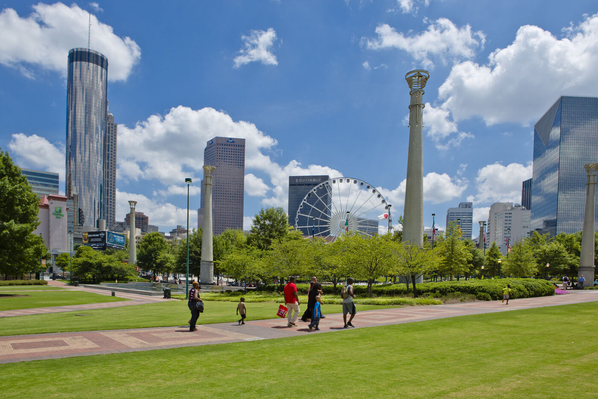

Centennial Olympic Park in downtown AtlantaCentennial Olympic Park is a nice place to walk around in downtown Atlanta. You can see the city buildings, the SkyView Ferris wheel, and the Olympic rings while you are there.
The Georgia Aquarium is close to the park and is one of Atlanta's most popular attractions. It has whale sharks, sea lions, rays, and many other kinds of sea animals.
Another place I would recommend is Piedmont Park. People go there to walk, run, have picnics, or just sit outside and enjoy the view of the city.